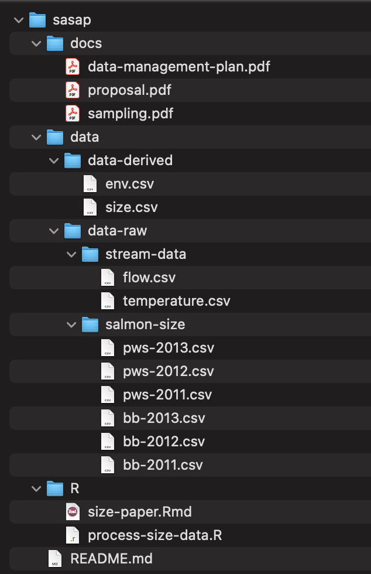
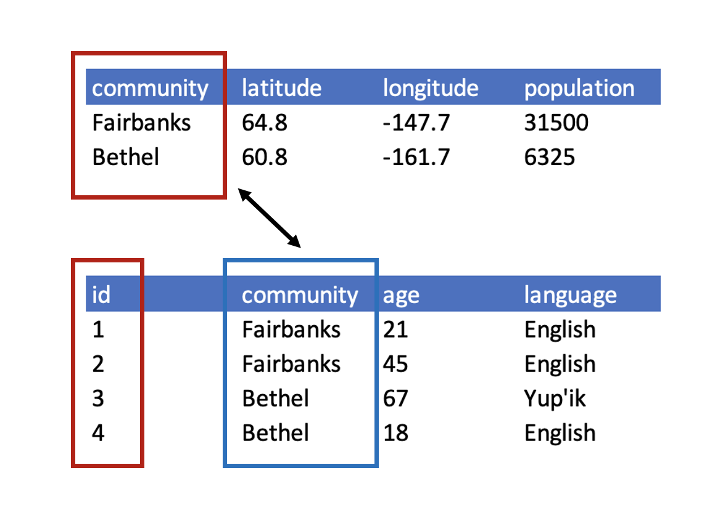
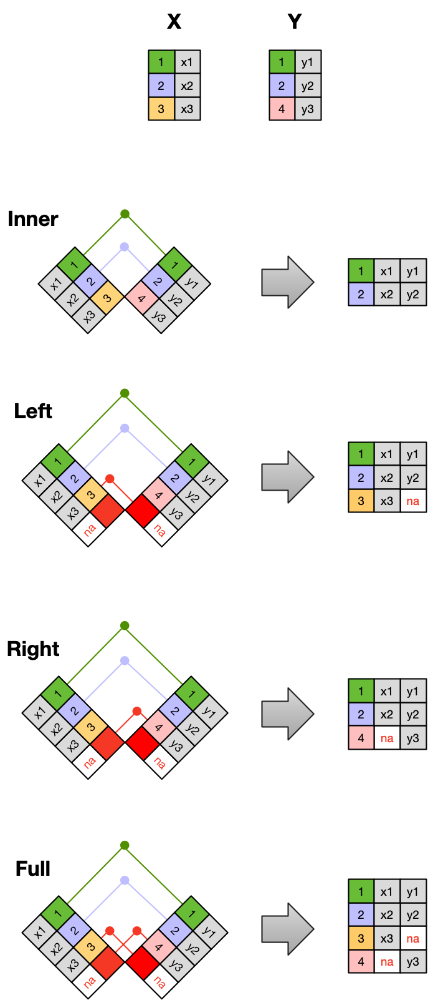
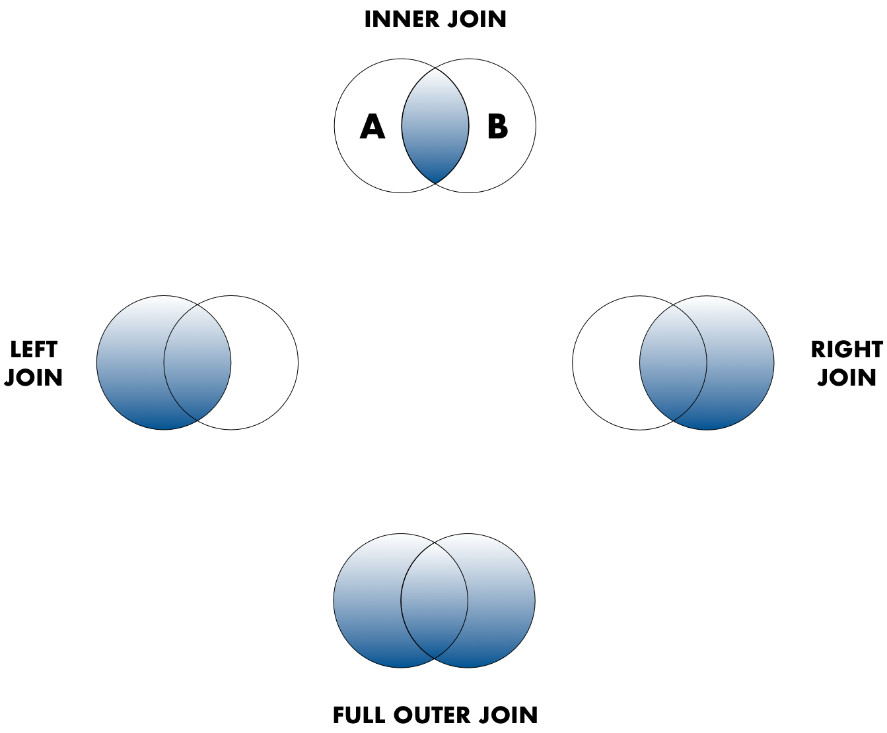

Learning Objectives
- Understand basics of relational data models aka tidy data
- Learn how to design and create effective data tables
Introduction
Slides for this lesson available here.
In this lesson we are going to learn what relational data models are, and how they can be used to manage and analyze data efficiently. Relational data models are what relational databases use to organize tables. However, you don’t have to be using a relational database (like mySQL, MariaDB, Oracle, or Microsoft Access) to enjoy the benefits of using a relational data model. Additionally, your data don’t have to be large or complex for you to benefit. Here are a few of the benefits of using a relational data model:
- Powerful search and filtering
- Handle large, complex data sets
- Enforce data integrity
- Decrease errors from redundant updates
Simple guidelines for data management
A great paper called ‘Some Simple Guidelines for Effective Data Management’ (Borer et al. 2009) lays out exactly that - guidelines that make your data management, and your reproducible research, more effective.
- Use a scripted program (like R!)
A scripted program helps to make sure your work is reproducible. Typically, point-and-click actions, such as clicking on a cell in a spreadsheet program and modifying the value, are not reproducible or easily explained. Programming allows you to both reproduce what you did, and explain it if you use a tool like Rmarkdown.
- Non-proprietary file formats are preferred (eg: csv, txt)
Using a file that can be opened using free and open software greatly increases the longevity and accessibility of your data, since your data do not rely on having any particular software license to open the data file.
- Keep a raw version of data
In conjunction with using a scripted language, keeping a raw version of your data is definitely a requirement to generate a reproducible workflow. When you keep your raw data, your scripts can read from that raw data and create as many derived data products as you need, and you will always be able to re-run your scripts and know that you will get the same output.
- Use descriptive file and variable names (without spaces!)
When you use a scripted language, you will be using file and variable names as arguments to various functions. Programming languages are quite sensitive with what they are able to interpret as values, and they are particularly sensitive to spaces. So, if you are building reproducible workflows around scripting, or plan to in the future, saving your files without spaces or special characters will help you read those files and variables more easily. Additionally, making file and variables descriptive will help your future self and others more quickly understand what type of data they contain.
- Include a header line in your tabular data files
Using a single header line of column names as the first row of your data table is the most common and easiest way to achieve consistency among files.
ASCII (sometimes just called plain text) is a very commonly used standard for character encoding, and is far more likely to persist very far into the future than proprietary binary formats such as Excel.
The next three are a little more complex, but all are characteristics of the relational data model:
- Design tables to add rows, not columns
- Each column should contain only one type of information
- Record a single piece of data only once; separate information collected at different scales into different tables.
File and folder organization
Before moving on to discuss the last 3 rules, here is an example of how you might organize the files themselves following the simple rules above. Note that we have all open formats, plain text formats for data, sortable file names without special characters, scripts, and a special folder for raw files.

Recognizing untidy data
Before we learn how to create a relational data model, let’s look at how to recognize data that does not conform to the model.
Data Organization
This is a screenshot of an actual dataset that came across NCEAS. We have all seen spreadsheets that look like this - and it is fairly obvious that whatever this is, it isn’t very tidy. Let’s dive deeper in to exactly why we wouldn’t consider it tidy.

Multiple tables
Your human brain can see from the way this sheet is laid out that it has three tables within it. Although it is easy for us to see and interpret this, it is extremely difficult to get a computer to see it this way, which will create headaches down the road should you try to read in this information to R or another programming language.

Inconsistent observations
Rows correspond to observations. If you look across a single row, and you notice that there are clearly multiple observations in one row, the data are likely not tidy.

Inconsistent variables
Columns correspond to variables. If you look down a column, and see that multiple variables exist in the table, the data are not tidy. A good test for this can be to see if you think the column consists of only one unit type.

Marginal sums and statistics
Marginal sums and statistics also are not considered tidy, and they are not the same type of observation as the other rows. Instead, they are a combination of observations.

Good enough data modeling
Denormalized data
When data are “denormalized” it means that observations about different entities are combined.

In the above example, each row has measurements about both the community in which observations occurred, as well as observations of two individuals surveyed in that community. This is not normalized data.
People often refer to this as wide format, because the observations are spread across a wide number of columns. Note that, should one survey another individual in either community, we would have to add new columns to the table. This is difficult to analyze, understand, and maintain.
Tabular data
Observations. A better way to model data is to organize the observations about each type of entity in its own table. This results in:
Separate tables for each type of entity measured
Each row represents a single observation within that entity
Observations (rows) are all unique
This is normalized data (aka tidy data)
Variables. In addition, for normalized data, we expect the variables to be organized such that:
- All values in a column are of the same type
- All columns pertain to the same observed entity (e.g., row)
- Each column represents either an identifying variable or a measured variable
Try to answer the following questions:
What are the observed entities in the example above?
What are the measured variables associated with those observations?
If we use these questions to tidy our data, we should end up with:
- one table for each entity observed
- one column for each measured variable
- additional columns for identifying variables (such as community)
Here is what our tidy data look like:

Note that this normalized version of the data meets the three guidelines set by (Borer et al. 2009):
- Design tables to add rows, not columns
- Each column should contain only one type of information
- Record a single piece of data only once; separate information collected at different scales into different tables.
Using normalized data
Normalizing data by separating it into multiple tables often makes researchers really uncomfortable. This is understandable! The person who designed this study collected all of this information for a reason - so that they could analyze it together. Now that our community and survey information are in separate tables, how would we use population as a predictor variable for language spoken, for example? The answer is keys - and they are the cornerstone of relational data models.
When one has normalized data, we often use unique identifiers to reference particular observations, which allows us to link across tables. Two types of identifiers are common within relational data:
- Primary Key: unique identifier for each observed entity, one per row
- Foreign Key: reference to a primary key in another table (linkage)
In our normalized tables above, identify the following:
- the primary key for each table
- any foreign keys that exist
The primary key of the top table is community. The primary key of the bottom table is id.
The community column is the primary key of that table because it uniquely identifies each row of the table as a unique observation of a community. In the second table, however, the community column is a foreign key that references the primary key from the first table.

Entity-Relationship Model (ER)
An Entity-Relationship model allows us to compactly draw the structure of the tables in a relational database, including the primary and foreign keys in the tables.
erDiagram
Responses |{--|| Communities : located_in
Communities {
string community PK
numeric latitude
numeric longitude
numeric population
}
Responses {
string id PK
string community FK
numeric age
string language
}
In the above model, one can see that each community in the community observations table must have one or more survey participants in the survey table, whereas each survey response has one and only one community.
Here is a more complicated ER Model showing examples of other types of relationships.

Merging data
Frequently, analysis of data will require merging these separately managed tables back together. There are multiple ways to join the observations in two tables, based on how the rows of one table are merged with the rows of the other.
When conceptualizing merges, one can think of two tables, one on the left and one on the right. The most common (and often useful) join is when you merge the subset of rows that have matches in both the left table and the right table: this is called an INNER JOIN. Other types of join are possible as well. A LEFT JOIN takes all of the rows from the left table, and merges on the data from matching rows in the right table. Keys that don’t match from the left table are still provided with a missing value (na) from the right table. A RIGHT JOIN is the same, except that all of the rows from the right table are included with matching data from the left, or a missing value. Finally, a FULL OUTER JOIN includes all data from all rows in both tables, and includes missing values wherever necessary.

Sometimes people represent these as Venn diagrams showing which parts of the left and right tables are included in the results for each join. These however, miss part of the story related to where the missing value come from in each result.

In the figure above, the blue regions show the set of rows that are included in the result. For the INNER join, the rows returned are all rows in A that have a matching row in B.
Exercise: Data modeling for course surveys
Our funding agency requires that we take surveys of individuals who complete our training courses so that we can report on the demographics of our trainees and how effective they find our courses to be. In your small groups, design a set of tables that will capture information collected in a participant survey that would apply to many courses.
Don’t focus on designing a comprehensive set of questions for the survey, one or two simple stand ins (eg: “Did the course meet your expectations?”, “What could be improved?”, “To what degree did your knowledge increase?”) would be sufficient.
Include as variables (columns) a basic set of information not only from the surveys (such as survey question responses), but about the courses, such as the date of the course and name of the course. Try to account for the same person participating in multiple courses, multiple courses being held each year, and the same survey questions can be asked of the participants for those different courses.
Draw your entity-relationship model for your tables.
We can start by creating one box for each type of entity that we want to collection data about. Each box represents a data table in our design. As we are collecting survey responses, we might start with a table for Response that would contian one observation for each survey response that we want to store. That Response is about a particular course, so we can add another table for information about that Course, and link those two tables.
erDiagram
Response ||--|| Course : about
Next, we can change the cardinality of the relationship to indicate that each course can contain multiple responses. We can also add a new table to hold the details for each Participant that takes each Course, and that each Participant provides a Response when filling out a survey. And lastly, because questions might be reused across surveys, we create a linkage from the Response table to a new Question table that has one row for each unique question.
erDiagram
Response |{--|| Course : about
Participant |{--|{ Course : takes
Participant ||--|| Response : provides
Response |{--|| Question : for
Finally, we can add the attributes that we would have for each table, indicating which are primary keys and which are foreign keys.
erDiagram
Response |{--|| Course : about
Participant |{--|{ Course : takes
Participant ||--|| Response : provides
Response |{--|| Question : for
Response {
string response_id PK
string participant_id FK
string course_id FK
string question_id FK
string response_value
}
Participant {
string participant_id PK
string name_first
string name_last
string email
}
Course {
string course_id PK
string course_name
date date_start
date date_end
}
Question {
string question_id PK
string question_text
}
Resources
Borer, Elizabeth, Eric Seabloom, Matthew B. Jones, and Mark Schildhauer. 2009.
“Some Simple Guidelines for Effective Data Management.” Bulletin of the Ecological Society of America 90: 205–14.
https://doi.org/10.1890/0012-9623-90.2.205.